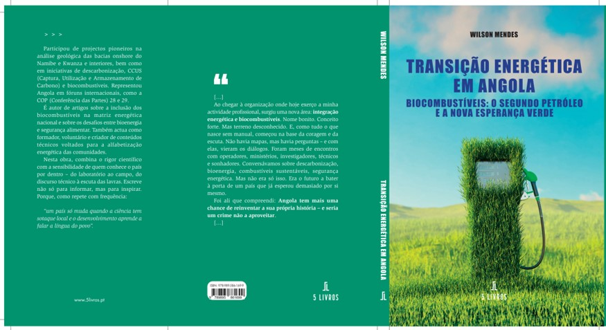

Transição Energética em Angola

Plataforma angolana de reflexão, informação e debate sobre o futuro energético nacional.
Um espaço digital para acompanhar notícias, divulgar ideias, publicar reflexões e construir debate sério sobre biocombustíveis, mercado de carbono, hidrogénio verde, descarbonização e desenvolvimento sustentável em Angola.

Uma reflexão estratégica sobre o papel dos biocombustíveis no futuro de Angola, ligando energia, agricultura, desenvolvimento rural, descarbonização e soberania.
O livro propõe uma leitura nacional da transição energética, mostrando que o futuro também pode nascer da terra, da ciência e da visão.
Conhecer o autor Saber maisActualizações sobre energia, clima, inovação, biocombustíveis, mercado de carbono e futuro energético de Angola.
A transição energética angolana não deve ser vista como moda passageira, mas como construção estratégica de valor, soberania e futuro económico.
Angola pode transformar a sua experiência em petróleo e gás numa base sólida para entrar com mais maturidade nos mercados do carbono, dos biocombustíveis, das energias renováveis e da indústria verde.
• energia com valor económico
• agricultura ligada à bioenergia
• mercado de carbono com credibilidade
• formação técnica para novas gerações
Uma presença técnica e estratégica dedicada à transição energética, às geociências e ao desenvolvimento sustentável de Angola.
Geólogo e especialista em transição energética e biocombustíveis, com trabalho orientado para descarbonização, integração energética, inovação e visão estratégica.
A sua actuação cruza ciência, planeamento e compromisso nacional, defendendo que Angola deve participar activamente nas decisões que moldam o novo mapa energético global.
Este portal funciona como espaço de reflexão, debate técnico e divulgação pública sobre energia, clima, mercado de carbono, biocombustíveis e oportunidades para o país.
Uma leitura estratégica do país como sistema energético em transformação, onde território, recursos, ciência e política pública precisam conversar.
O mapa energético de Angola já não pode ser lido apenas pela lente tradicional. É preciso cruzar petróleo, gás, renováveis, agricultura, clima e indústria numa estratégia integrada.
Numa fase seguinte, esta área poderá evoluir para um mapa interactivo com projectos, localizações-chave e corredores de desenvolvimento energético.
Uma área pensada para textos técnicos, análises especializadas e reflexões com base científica sobre energia, clima e desenvolvimento sustentável em Angola.
Esta secção acolhe conteúdos mais estruturados, incluindo notas técnicas, ensaios especializados, reflexões estratégicas e textos de base científica.
Uma leitura sobre a capacidade de Angola ligar energia, agricultura e desenvolvimento rural numa nova lógica de valor.
Enquadramento das possibilidades institucionais, económicas e climáticas para Angola.
Uma reflexão inicial sobre o papel do hidrogénio verde na nova economia energética.
O portal está aberto à construção de pontes entre academia, indústria, instituições públicas, investigadores, estudantes e iniciativas ligadas ao futuro energético de Angola.
Espaço para colaboração com instituições de ensino, investigação e formação técnica.
Diálogo com empresas de petróleo e gás, renováveis, biocombustíveis e inovação energética.
Integração com iniciativas ligadas a descarbonização, carbono, ambiente e desenvolvimento.
Contributos de profissionais, geosoldados, autores, analistas e líderes de pensamento.
Espaço para observações, análises e reacções às ideias publicadas no portal.
Nesta versão, as notícias e artigos editoriais continuam em modo de protótipo local.
O portal pode evoluir para uma plataforma pública nacional de referência sobre transição energética em Angola.
Email: wilsonmendes755@gmail.com
WhatsApp: +244 923 716 758